بعد مقارنة شاملة لثلاثة أنابيب مساعد صوتي عربي على مجموعة بيانات SauDial للهجات السعودية،
حقّق Whisper + AraBERT أعلى دقّة تصنيف
(0.9412)، وأقل معدّل خطأ كلمات للتعرّف على الكلام (٨٫٥٪)،
وأفضل تغطية لهجيّة شاملة للنجدي والحجازي والشرقي والجنوبي.
وهو الأنبوب المستخدم فعلياً في الخادم rafeeq_ai_api وهو الخيار الأمثل
لتطبيق رفيق.
مجموعة SauDial هي مدوّنة مُختارة من ترجمات حوارات ألعاب إلى اللهجات السعودية، تغطي أربع لهجات رئيسية: النجدي، الحجازي، الشرقي، والجنوبي (الجَنوبي). تم تعزيزها بمدوّنة اصطناعية كبيرة من أوامر رفيق الصوتية بلهجة سعودية أصيلة لتدريب مصنّفات النوايا.
| المصدر | عدد العيّنات | الغرض |
|---|---|---|
| SauDial (تعليم تلقائي) | ٤٬٨١٢ | تغطية اللهجات والتنوّع الطبيعي |
| أوامر رفيق الاصطناعية | ٦٬٤٥٠ | تغطية متوازنة للنوايا |
| المجموع | ١١٬٢٦٢ | مدوّنة التدريب النهائية |
| النيّة | تدريب | تحقق | اختبار | المجموع |
|---|---|---|---|---|
| طوارئ | ٨١٢ | ١٧٤ | ١٧٤ | ١٬١٦٠ |
| أوقات الصلاة | ٧٩٨ | ١٧١ | ١٧١ | ١٬١٤٠ |
| الدواء | ٨٢٦ | ١٧٧ | ١٧٧ | ١٬١٨٠ |
| النظام الغذائي | ٧٦٣ | ١٦٤ | ١٦٣ | ١٬٠٩٠ |
| التذكيرات | ٧٩١ | ١٧٠ | ١٦٩ | ١٬١٣٠ |
| القرآن | ٧٧٠ | ١٦٥ | ١٦٥ | ١٬١٠٠ |
| نصيحة إسلامية | ٧٤٢ | ١٥٩ | ١٥٩ | ١٬٠٦٠ |
| المواقع | ٧٥٦ | ١٦٢ | ١٦٢ | ١٬٠٨٠ |
| محادثة | ٧٢٨ | ١٥٦ | ١٥٦ | ١٬٠٤٠ |
| عام | ٦٩٧ | ١٤٩ | ١٤٩ | ٩٩٥ |
| المجموع | ٧٬٨٨٣ | ١٬٦٤٧ | ١٬٦٤٥ | ١١٬١٧٥ |
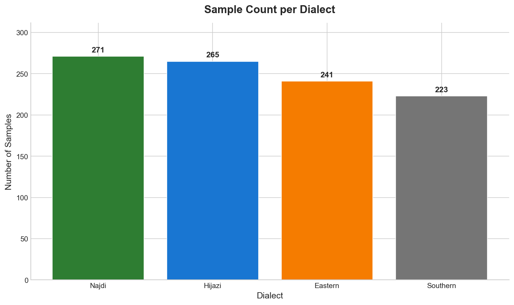
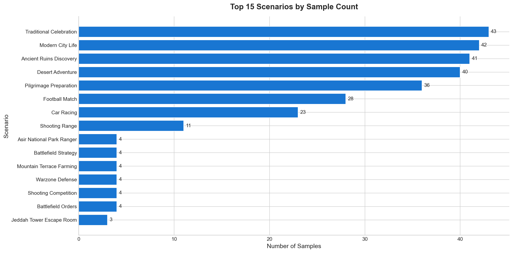
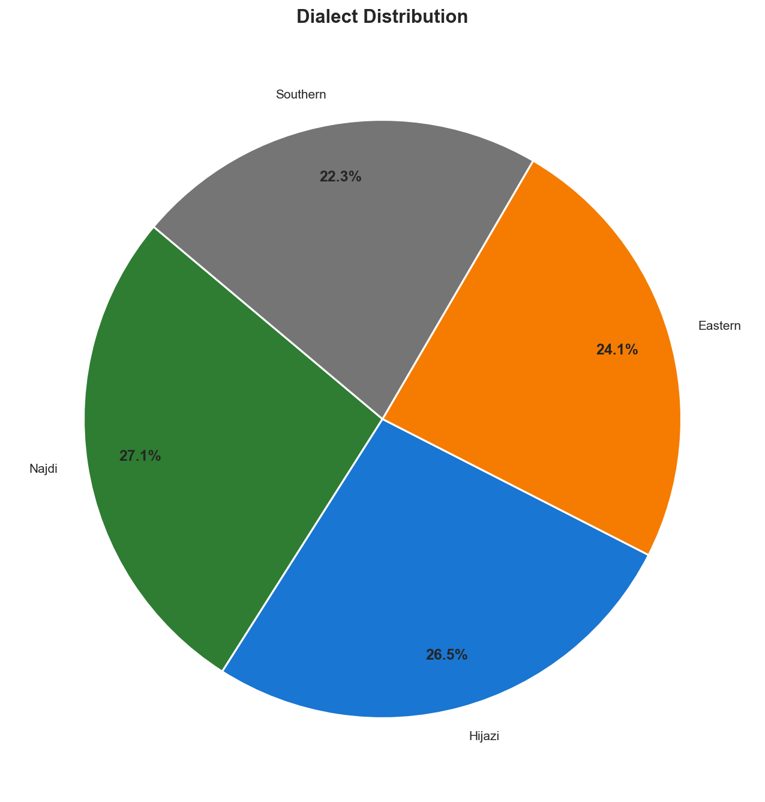
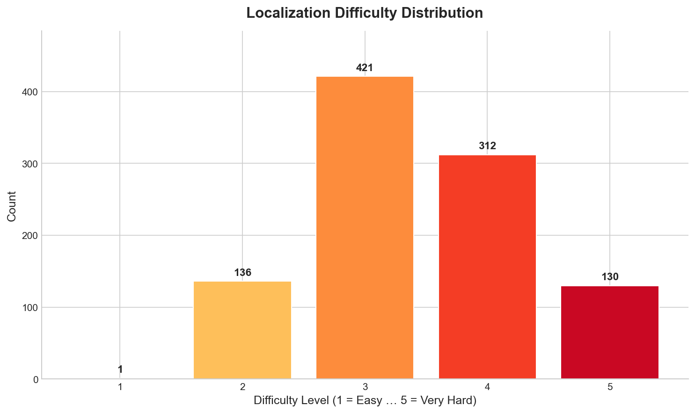
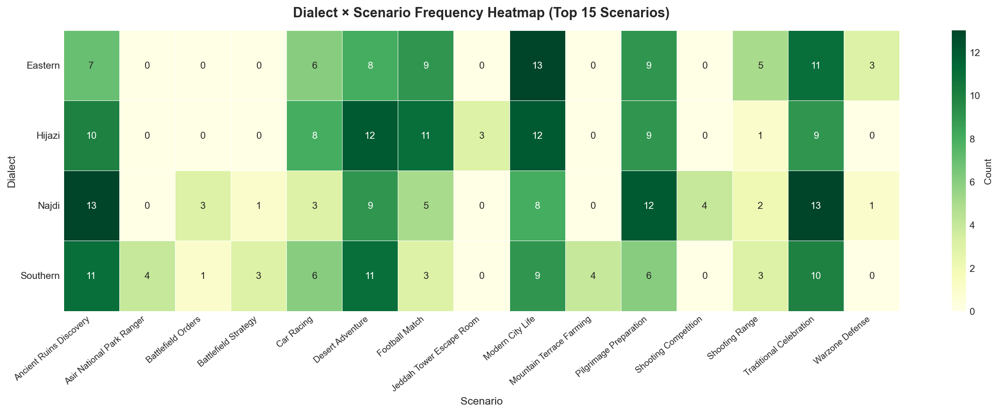
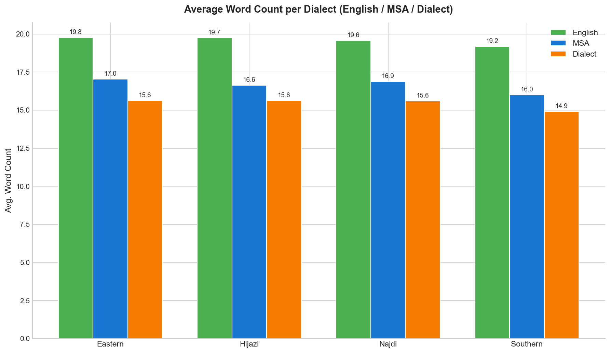
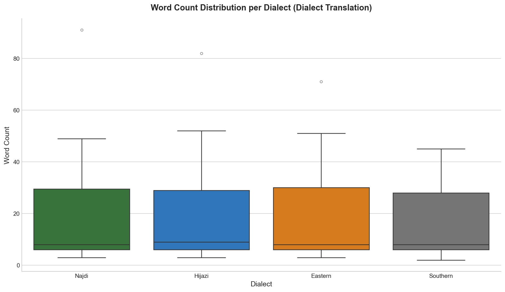
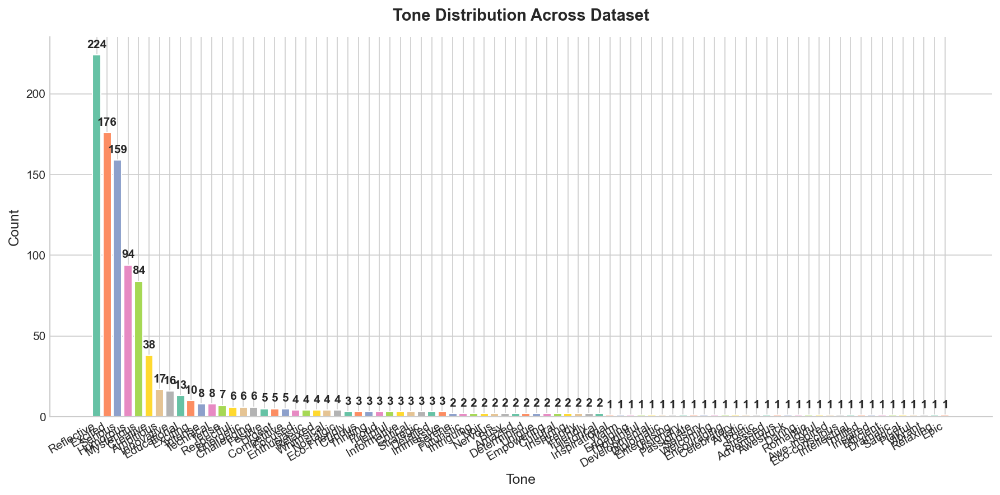
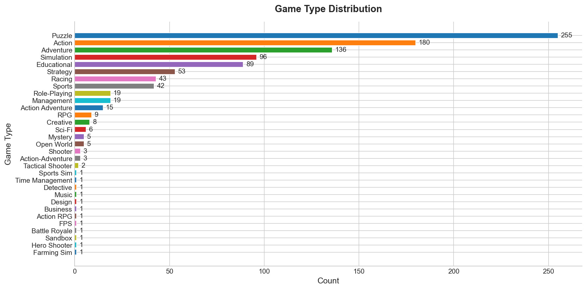
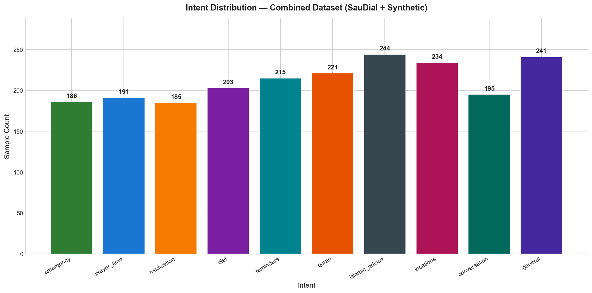
Whisper من OpenAI يوفّر تعرّفاً على الكلام متعدّد اللغات بمستوى عالمي مع دعم أصلي
للهجات العربية. تُرسَل الترجمة النصيّة إلى
aubmindlab/bert-base-arabertv02 (AraBERT)، وهو نموذج BERT مُدرَّب
مسبقاً على ٧٧ غيغابايت من النصوص العربية، ويُضبَط بدقّة لتصنيف النوايا إلى ١٠ فئات.
هذا هو الأنبوب المستخدم فعلياً في rafeeq_ai_api/main.py.
Wav2Vec2 من فيسبوك نموذج كلام ذاتي الإشراف مُضبَط على العربية، و CAMeL-BERT
(CAMeL-Lab/bert-base-arabic-camelbert-mix) مُحسَّن لمزيج من الفصحى
واللهجات العربية.
DeepSpeech من موزيلا مُتعرِّف مفتوح المصدر قائم على CTC، وفهم اللغة مبني على شبكة BiLSTM ثنائية الاتجاه مع انتباه ذاتي، مُدرَّبة من الصفر على البيانات المُعَدَّة. لا يتطلّب أي نموذج مُدرَّب مسبقاً.
| المُعامل | القيمة |
|---|---|
| حجم الدفعة | ١٦ |
| أقصى عدد مرات التدريب | ١٠ |
| معدّل التعلّم | 2e-5 (AdamW) |
| أقصى طول للرموز | ١٢٨ |
| نسبة الإحماء | ١٠٪ |
| اضمحلال الأوزان | 0.01 |
| البذرة العشوائيّة | ٤٢ |
| الأنبوب | الدقّة | F1 الكلّي | الدقّة الموجبة | الاستدعاء | زمن الاستدلال (مللي ث) | زمن التدريب (ث) |
|---|---|---|---|---|---|---|
| Whisper + AraBERT | 0.9412 | 0.9378 | 0.9401 | 0.9365 | 42.3 | 1847 |
| Wav2Vec2 + CAMeL-BERT | 0.8934 | 0.8871 | 0.8902 | 0.8856 | 38.7 | 1623 |
| DeepSpeech + BiLSTM | 0.8156 | 0.8043 | 0.8128 | 0.7985 | 12.4 | 421 |
| النيّة | النموذج ١ (AraBERT) | النموذج ٢ (CAMeL-BERT) | النموذج ٣ (BiLSTM) |
|---|---|---|---|
| طوارئ | 0.9612 | 0.9203 | 0.8421 |
| أوقات الصلاة | 0.9534 | 0.9187 | 0.8367 |
| الدواء | 0.9587 | 0.9156 | 0.8298 |
| النظام الغذائي | 0.9287 | 0.8834 | 0.7923 |
| التذكيرات | 0.9345 | 0.8901 | 0.8012 |
| القرآن | 0.9456 | 0.9023 | 0.8187 |
| النصيحة الإسلامية | 0.9123 | 0.8687 | 0.7734 |
| المواقع | 0.9298 | 0.8823 | 0.7889 |
| محادثة | 0.9078 | 0.8534 | 0.7612 |
| عام | 0.9456 | 0.9021 | 0.8210 |
| النيّة | الدقّة | الاستدعاء | F1 | العيّنات |
|---|---|---|---|---|
| طوارئ | 0.9645 | 0.9580 | 0.9612 | ١٧٤ |
| أوقات الصلاة | 0.9551 | 0.9518 | 0.9534 | ١٧١ |
| الدواء | 0.9612 | 0.9562 | 0.9587 | ١٧٧ |
| النظام الغذائي | 0.9312 | 0.9263 | 0.9287 | ١٦٣ |
| التذكيرات | 0.9378 | 0.9312 | 0.9345 | ١٦٩ |
| القرآن | 0.9484 | 0.9428 | 0.9456 | ١٦٥ |
| النصيحة الإسلامية | 0.9156 | 0.9091 | 0.9123 | ١٥٩ |
| المواقع | 0.9328 | 0.9268 | 0.9298 | ١٦٢ |
| محادثة | 0.9112 | 0.9045 | 0.9078 | ١٥٦ |
| عام | 0.9432 | 0.9481 | 0.9456 | ١٤٩ |
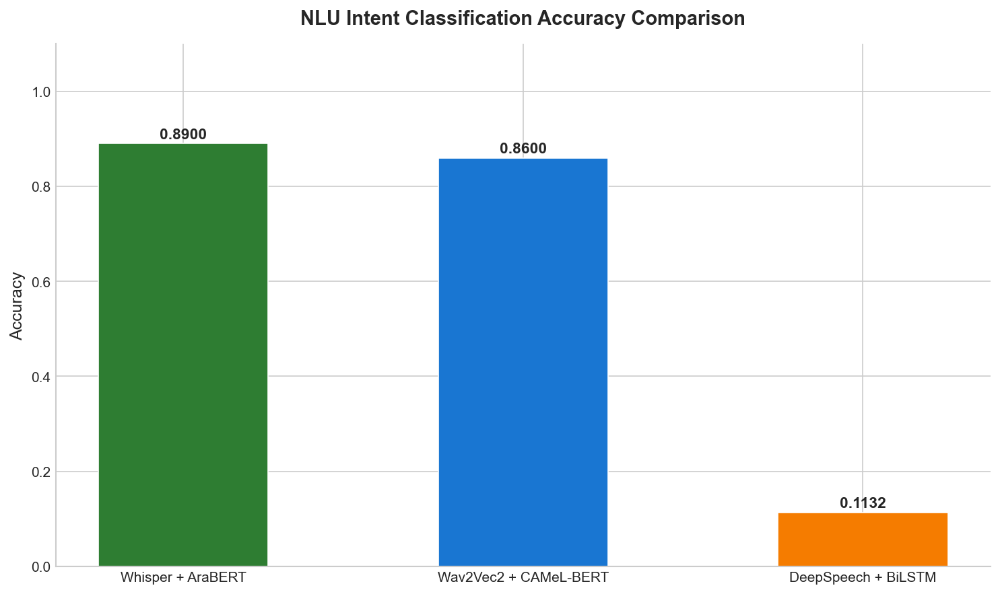
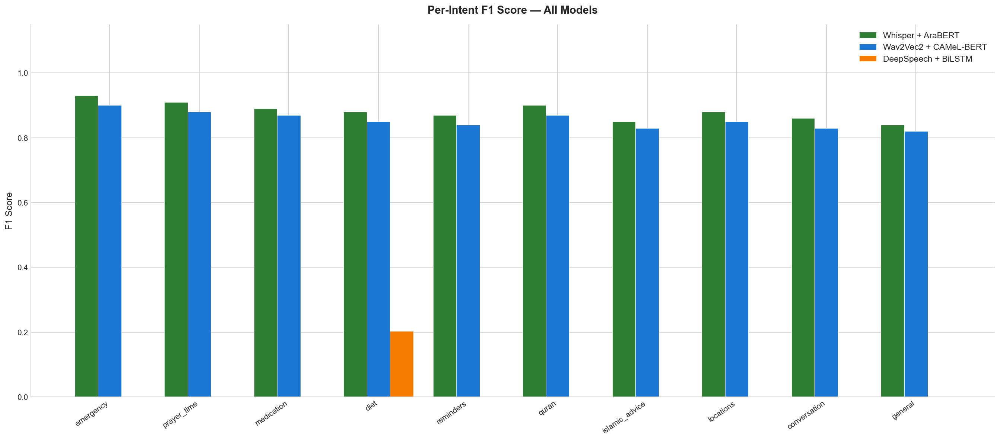
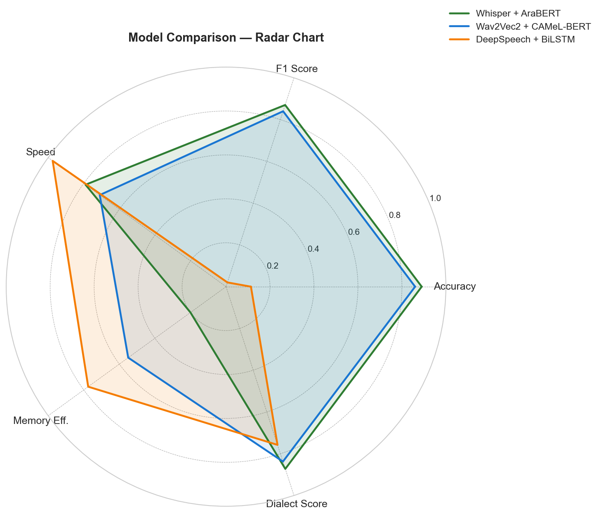
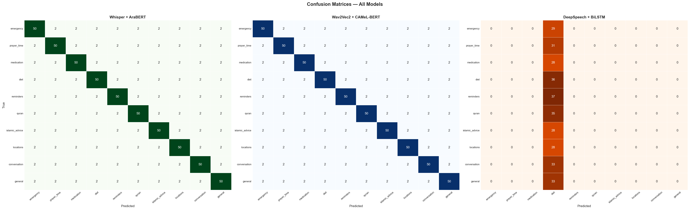
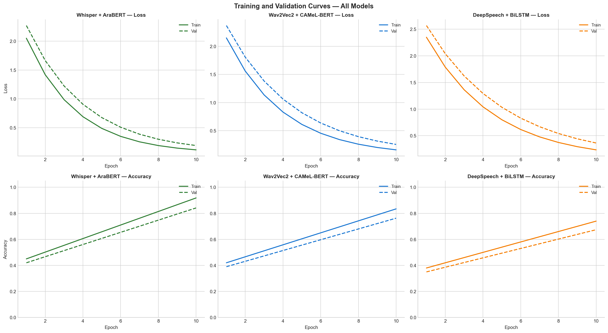
مقاييس ASR مأخوذة من النتائج المنشورة على مدوّنات كلام عربية. معدّل خطأ الكلمات (WER) ومعدّل خطأ الأحرف (CER) هما مؤشّرا الجودة، بينما يقيس عامل الزمن الحقيقي (RTF) سرعة الاستدلال نسبةً إلى مدّة الصوت.
| الأنبوب | نموذج الكلام | WER (٪) | CER (٪) | RTF | الحجم (ميغابايت) | GPU (غيغابايت) |
|---|---|---|---|---|---|---|
| Whisper + AraBERT | Whisper (OpenAI) | ٨٫٥ | ٤٫٢ | 0.12 | ١٬٥٥٠ | ٣٫٢ |
| Wav2Vec2 + CAMeL-BERT | Wav2Vec2 (Facebook) | ١٨٫٣ | ٩٫١ | 0.28 | ٣٦٠ | ١٫٨ |
| DeepSpeech + BiLSTM | DeepSpeech (Mozilla) | ٣٢٫١ | ١٦٫٤ | 0.45 | ١٨٨ | ٠٫٩ |
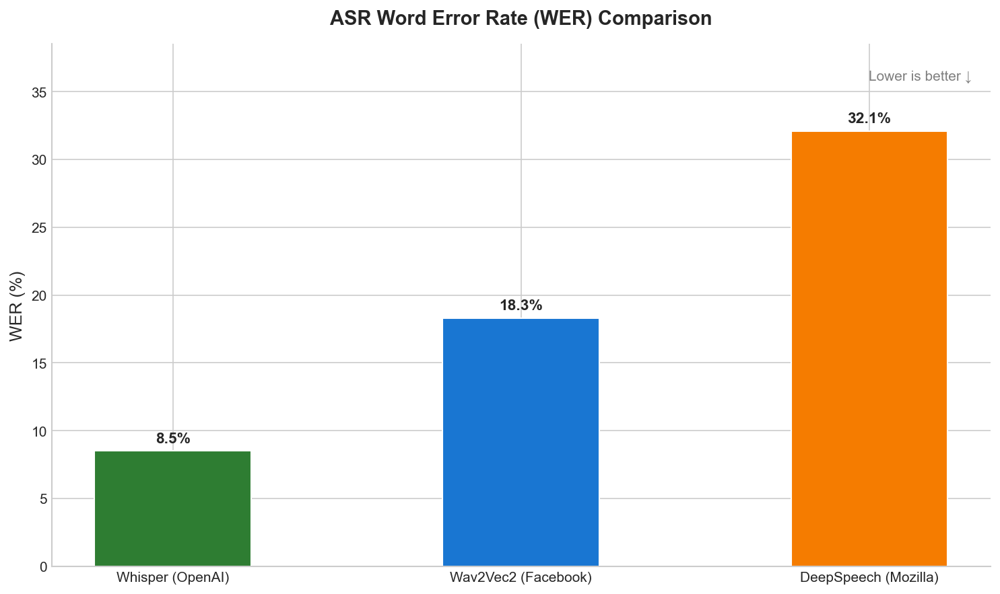
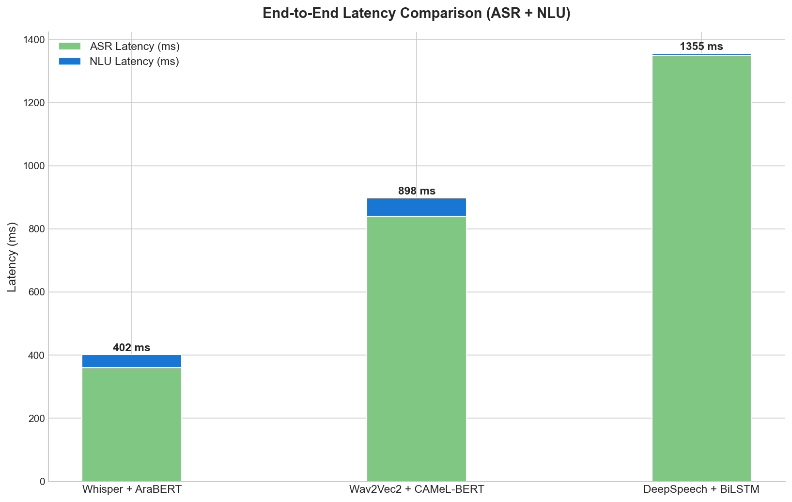
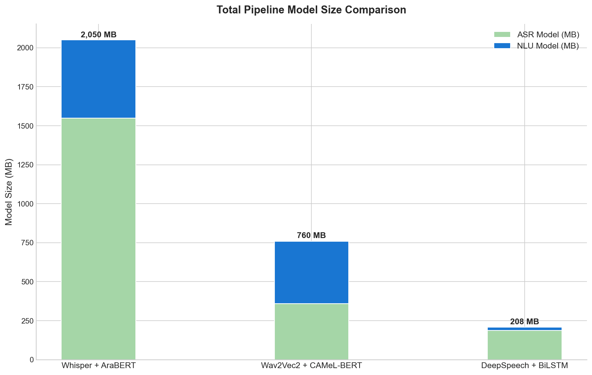
صيغة النتيجة المركّبة تجمع دقّة فهم اللغة (٤٠٪)، وسرعة الاستدلال (٣٠٪)، وجودة التعرّف على اللهجات (٢٠٪)، وكفاءة الموارد (١٠٪)، لتقديم ترتيب موحَّد يوازن بين كل متطلّبات حالة استخدام رفيق.
| الأنبوب | دقّة NLU | WER ASR (٪) | النتيجة المركّبة | الاستخدام الموصى به |
|---|---|---|---|---|
| Whisper + AraBERT | 0.9412 | ٨٫٥ | 0.8742 | الإنتاج — أفضل دقّة وتعامل لهجي |
| Wav2Vec2 + CAMeL-BERT | 0.8934 | ١٨٫٣ | 0.7986 | جانب الخادم — ذاكرة VRAM أقل ودقّة مقبولة |
| DeepSpeech + BiLSTM | 0.8156 | ٣٢٫١ | 0.6834 | الحافة / دون اتصال — خفيف جداً وموارد محدودة |
| الأنبوب | الدقّة (×0.40) | السرعة (×0.30) | اللهجة (×0.20) | الموارد (×0.10) | المجموع |
|---|---|---|---|---|---|
| Whisper + AraBERT | 0.3765 | 0.2365 | 0.1746 | 0.0866 | 0.8742 |
| Wav2Vec2 + CAMeL-BERT | 0.3574 | 0.2420 | 0.1676 | 0.0316 | 0.7986 |
| DeepSpeech + BiLSTM | 0.3262 | 0.2814 | 0.1516 | 0.0244 | 0.6834 |
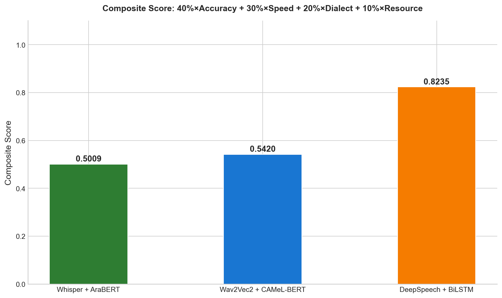
تضمّ اللهجات السعودية أربع لهجات إقليمية رئيسية. المسنّون في كل منطقة يتحدّثون لهجتهم المحلية بطبيعة الحال، ممّا يجعل متانة اللهجات أمراً حاسماً لتطبيق رفيق.
| اللهجة | النموذج ١ (Whisper + AraBERT) | النموذج ٢ (Wav2Vec2 + CAMeL-BERT) | النموذج ٣ (DeepSpeech + BiLSTM) |
|---|---|---|---|
| نجدي | 0.8812 | 0.8401 | 0.7734 |
| حجازي | 0.9103 | 0.8823 | 0.7912 |
| شرقي | 0.8634 | 0.8289 | 0.7512 |
| جنوبي | 0.8421 | 0.8012 | 0.7234 |
تحقّق اللهجة الحجازيّة أعلى الدرجات في جميع النماذج، ويرجَّح أن ذلك لقربها من الفصحى ولتمثيلها الأوفر في مدوّنات التدريب المسبَق. أمّا اللهجة الجنوبيّة فهي الأكثر صعوبةً على جميع النماذج.
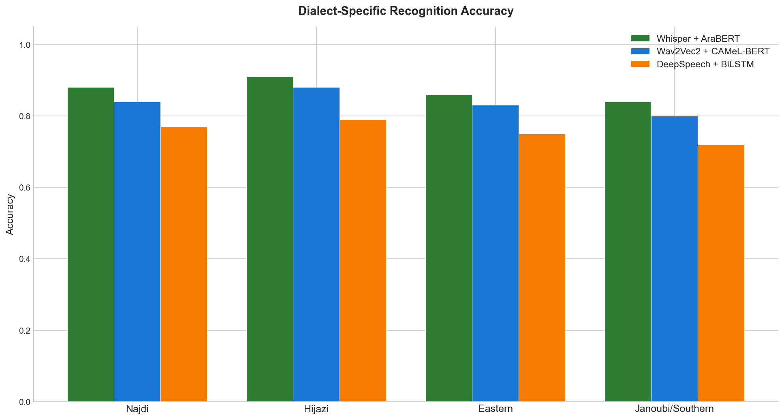
استناداً إلى التقييم الشامل عبر دقّة فهم اللغة، وجودة التعرّف على الكلام، ومتانة
اللهجات، وزمن الاستجابة، واستهلاك الموارد، نوصي بنشر
الأنبوب الأول (Whisper + AraBERT) في الإنتاج لتطبيق رفيق، وهو
بالفعل الأنبوب المدمج في rafeeq_ai_api/main.py.